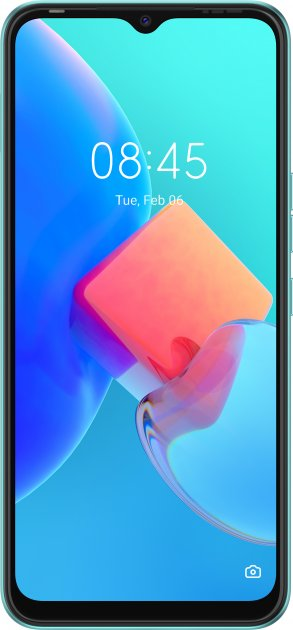
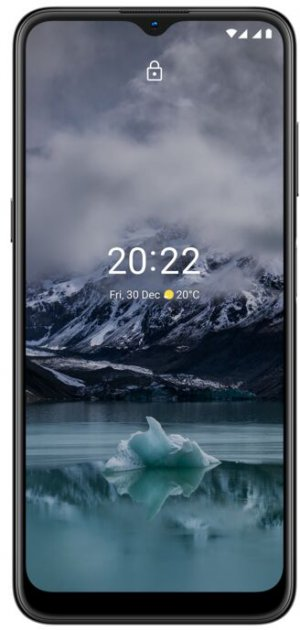

Экран (6.4", Super AMOLED, 2400x1080) / MediaTek Helio G80 (2.0 ГГц + 1.8 ГГц) / основная квадро-камера: 64 Мп + 8 Мп + 2 Мп + 2 Мп, фронтальная камера: 20 Мп / RAM 6 ГБ / 128 ГБ встроенной памяти + microSD (до 1 ТБ) / 3G / LTE / GPS / поддержка 2х SIM-карт (Nano-SIM) / Android 11 / 5000 мА*ч
Экран (6.6", IPS, 1612x720) / Unisoc T606 (1.6 ГГц) / двойная основная камера: 13 Мп + 0.08 Мп, фронтальная камера: 8 Мп / RAM 4 ГБ / 64 ГБ встроенной памяти + microSD (до 512 ГБ) / 3G / LTE / GPS / поддержка 2х SIM-карт (Nano-SIM) / Android 11 / 5000 мА*ч
Экран (6.5", IPS, 1600x720) / Unisoc T606 (2 x 1.6 ГГц + 6 x 1.6 ГГц) / тройная основная камера: 13 Мп + 2 Мп + 2 Мп, фронтальная 8 Мп / RAM 4 ГБ / 64 ГБ встроенной памяти + microSD (до 512 ГБ) / 3G / LTE / GPS / поддержка 2х SIM-карт (Nano-SIM) / Android 12 / 5050 мА*ч